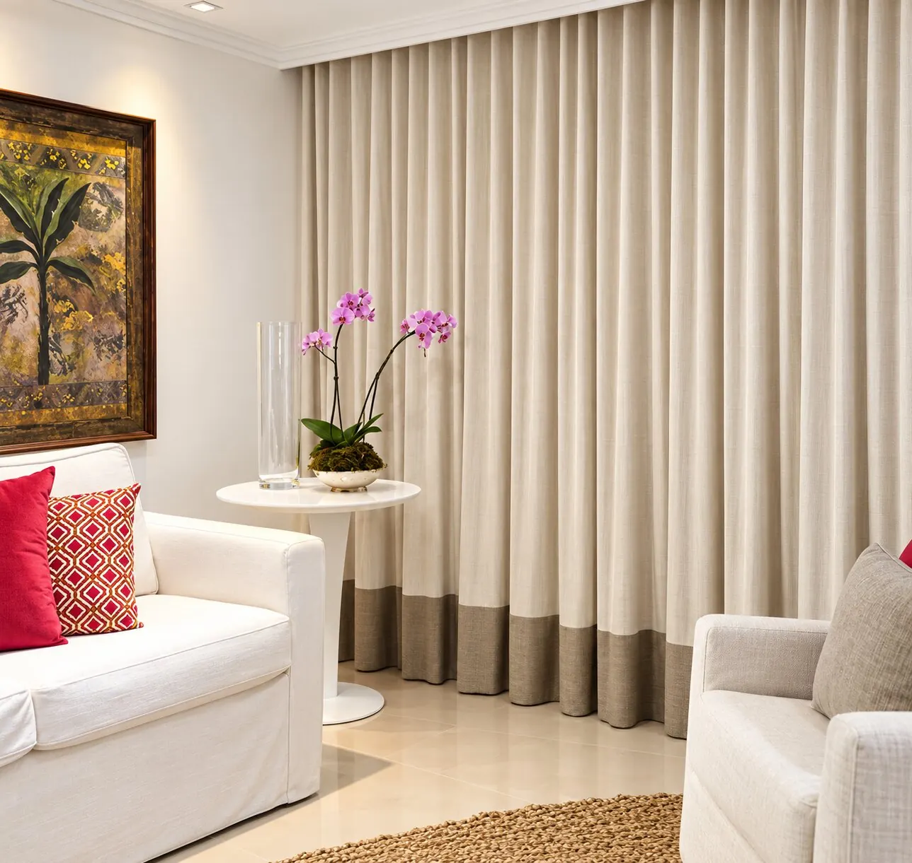
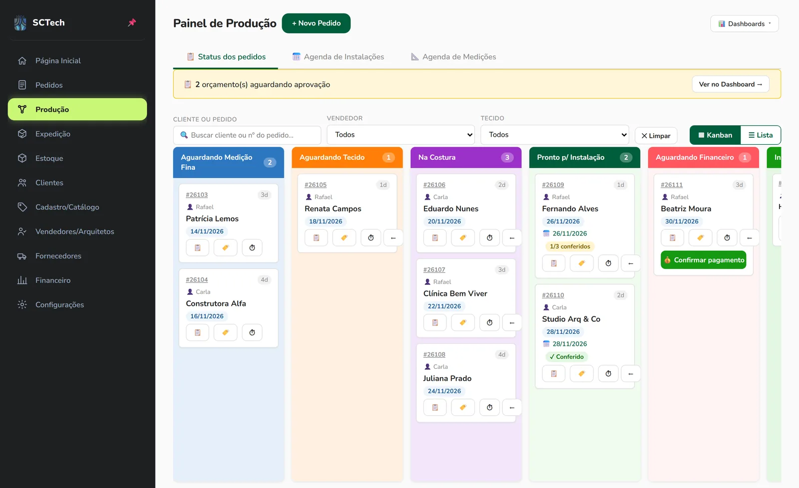
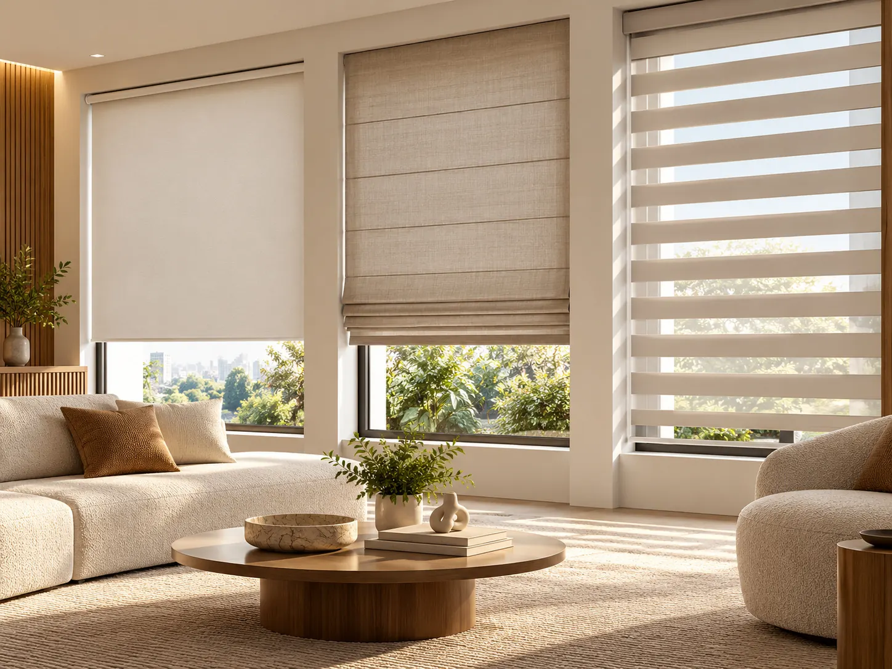
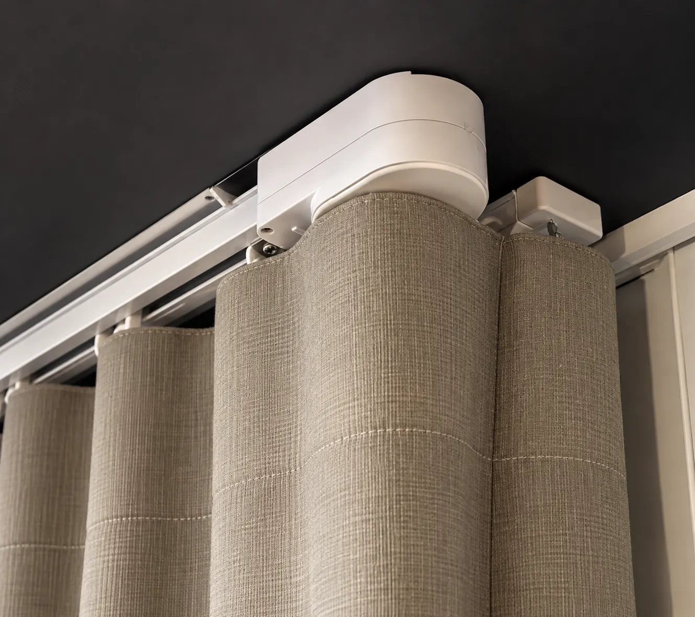
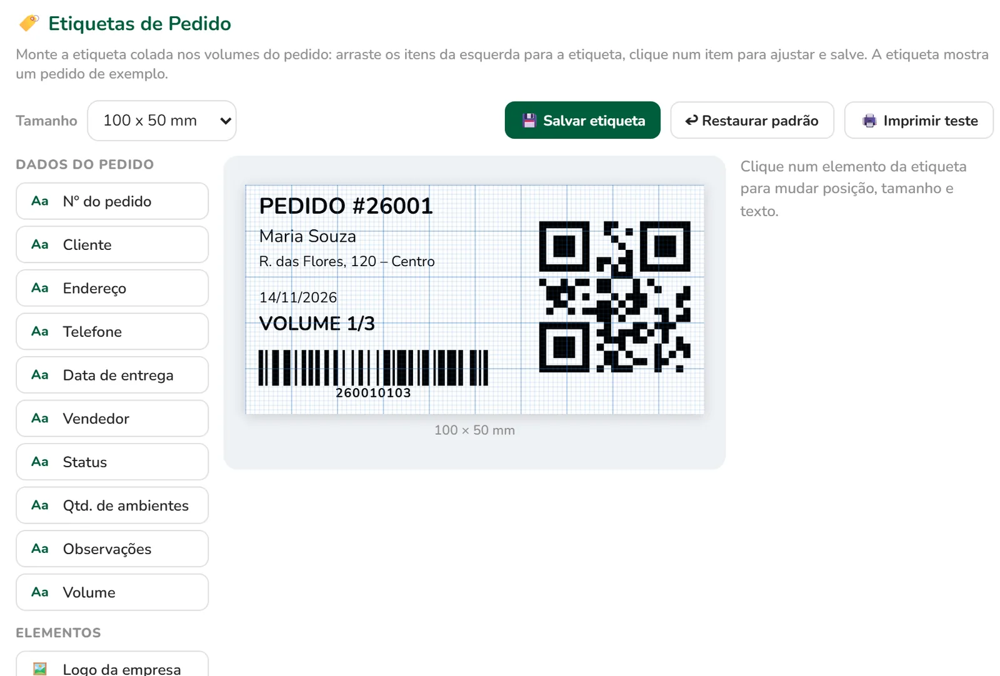

Cortinas sob medida
Prega, fator, número de panos e altura de corte calculados por tecido, em cada ambiente do pedido.
Wave · fator 2,5× · 3 panosPanos, altura de corte e metragem por ambiente, sem conta de cabeça.
Cada pedido na sua etapa, da medição à instalação.
Rolo por rolo, com aviso antes de o tecido acabar.
Etiqueta em cada volume. Bipou, conferiu — nada sai trocado.
Telas reais do SCTech. Escolha uma etapa para ver como ela funciona.
Todos os pedidos em colunas, da medição fina à instalação. Arraste a etapa, veja quem é o vendedor, a data de entrega e quantos volumes já foram conferidos.

Cortina, persiana ou motorização: o pedido leva tudo o que a produção precisa saber.

Prega, fator, número de panos e altura de corte calculados por tecido, em cada ambiente do pedido.
Wave · fator 2,5× · 3 panos
Kits de fixação por tipo de instalação, materiais e acessórios lançados direto no pedido.
Kit de fixação · por metro
Acionamento com ou sem motor, altura do comando e o pedido de compra pronto para o fornecedor.
Acionamento · altura 1,20 mCada etapa recebe o que a anterior deixou pronto. Nada é digitado duas vezes.
Ambientes, tecidos e valores. Aprovou, vira pedido sem redigitar nada.
Visita técnica na agenda, com endereço e horário. A medida fina atualiza o cálculo.
Tecido reservado do estoque, OS impressa e costura acompanhada pelo prazo.
Uma etiqueta por volume. O conferente bipa ou digita o código e confere tudo.
Agenda vinculada ao pedido, pagamento confirmado e histórico do cliente guardado.
Um pedido esquecido custa tecido, tempo e cliente.
Medida da sala da Helena… confirmar de novo??
Linho areia — ainda tem rolo?
Instalação sexta ou sábado?
Cobrar o sinal do pedido 240
Post-it, WhatsApp e memória. Cada dúvida vira uma ligação, e cada ligação atrasa a costura.
Cada pedido com seu status, sua medida e seu prazo — visível para a equipe inteira.

Demonstração gratuita
Uma conversa online em que mostramos o sistema com pedidos parecidos com os seus: do orçamento à etiqueta no pacote. Sem compromisso.
Agende uma demonstração gratuita e veja o SCTech com pedidos parecidos com os seus.